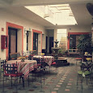

Why Cabo?
Cabo San Lucas and San José del Cabo are the two distinct cities that make up the Los Cabos region at the southern tip of Mexico's Baja California Peninsula.
CAFE
My favorite cafe in Cabo


Hi! My name is Felicia and I have been visiting Mexico for several years. I am very fond of the country. I created this page as part of a project for SheCodes Responsive to develop my coding skills.
This website was created as a project for SheCodes Responsive to showcase the beauty of Mexico and provide information about
Cabo San Lucas.
This project was coded by Felicia Sauls and is
open sourced on GitHub